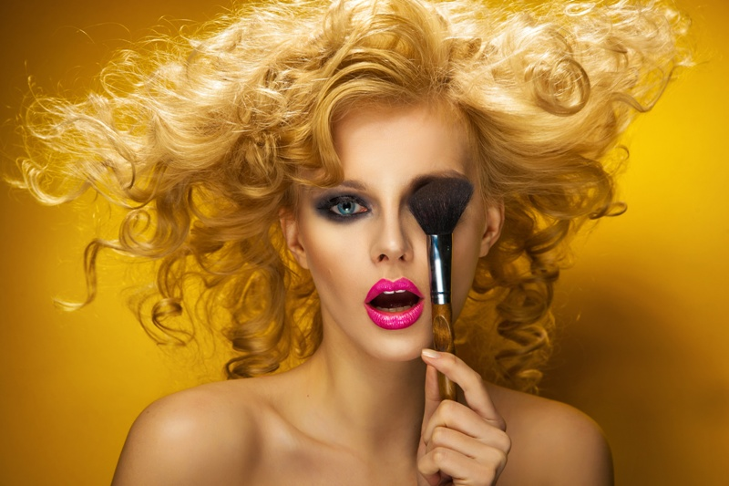
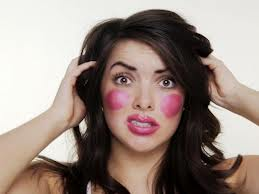
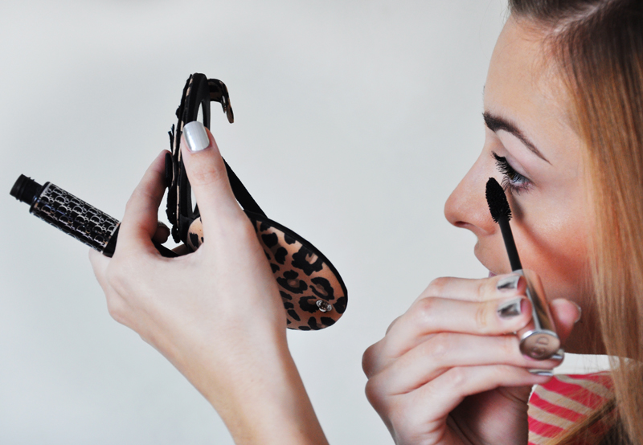

10 grzechów głównych w makijażu.
Jak wykonać IDEALNY MAKIJAŻ?
Każda kobieta ma swój określony sposób malowania się - kolejność nakładania kosmetyków, sposób ich aplikacji czy wybór kolorów. Ale czy na pewno malujesz się we właściwy sposób? Sprawdź to i zmień swoje nawyki. Mówimy, jakie błędy najczęściej popełniają kobiety wykonując makijaż?

-
Zbyt ciężki makijaż
To najczęstszy błąd popełniany przez kobiety, szczególnie latem. Pamiętajmy jednak o tym, że zbyt duża ilość fluidu po prostu postarza. Jeśli nasza twarz jest delikatnie opalona możemy jedynie wyrównać jej koloryt lekkim podkładem i wytuszować rzęsy. Nieodpowiedni kolor podkładu
Zbyt ciemny lub zbyt jasny wygląda po prostu sztucznie. Aby dokonać właściwego zakupu testując podkład nakładajmy go na żuchwę nie nadgarstek.Aplikacja różu
 To, w jaki sposób nakładamy róż zależy od kształtu naszej twarzy. Osoby o szczupłej twarzy powinny potraktować różem jedynie szczyty kości policzkowych (poziomy ruch pędzla). Panie, które maja okrągła twarz wysmuklą ja nakładając róż poniżej kości policzkowych (skośny ruch pędzla).-
Kolor oczu a ust
Pamiętajmy, jeśli intensywnie malujemy oczy usta pozostają w neutralnym kolorze. I na odwrót - jeśli nasze wargi podkreślamy czerwienią, oczy pomalujmy delikatnie. Dzięki temu nasz makijaż pozostanie wyrazisty, ale nie zbyt nachalny. -
Zły kształt brwi
Idealne brwi muszą mieć odpowiednią długość, ale także grubość. Zbyt wyskubane albo zbyt szerokie zniekształcą naszą twarz. Najlepiej raz na jakiś czas udać się do kosmetyczki, która nada im odpowiedni wygląd, a potem jedynie wyskubywać odrastające włoski. Niedopasowanie korektora
Po pierwsze używaj go zawsze na podkład, a jego kolor dopasuj do niedoskonałości, którą chcesz zamaskować np. zielony na popękane naczynka. Uniwersalnym rozwiązaniem jest beżowy korektor, ale uważaj, by nie odcinał się zbytnio od koloru podkładu.Źle użyta konturówka
Pamiętaj, aby trzymać się linii kształtu ust. Owszem możesz je zmniejszyć lub zwiększyć rysując kreskę nad lub pod linią ust, ale pamiętaj, że kształt tej linii musi być idealny. Konturówka powinna być albo o ton jaśniejsza od pomadki albo w kolorze naszych ust. -
Podążanie ślepo za trendami
Wykonując makijaż przede wszystkim starajmy się o to, by pasował on do naszego typu urody oraz do okoliczności. Trendy mogą nam jedynie dostarczyć ciekawych inspiracji, ale nie kierujmy się nimi na ślepo, bo nie wszystko każdemu pasuje. Nadużywanie sypkiego pudru
Użycie zbyt dużej ilości sypkiego pudru sprawi wrażenie, że nasza skóra jest przesuszona. Używajmy go, więc tylko w strategicznych miejscach narażonych na błyszczenie, a więc nanieśmy go na czoło, nos i brodę (tzw. strefa T).-
Demakijaż
Ważną czynnością związana z makijażem jest pozbywanie się jego. Co najważniejsze róbmy to dokładnie, tak, aby w nocy nasza skóra mogła swobodnie oddychać. Woda i mydło podrażnia naszą twarz, dlatego do demakijażu używajmy przeznaczonych do tego kosmetyków: mleczek czy wodę oligoceńską.